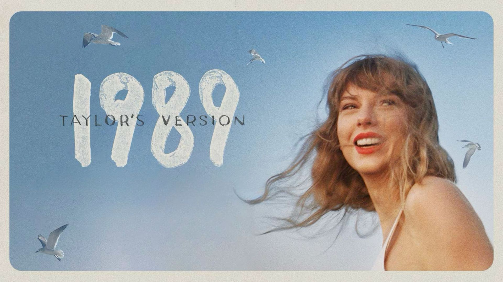
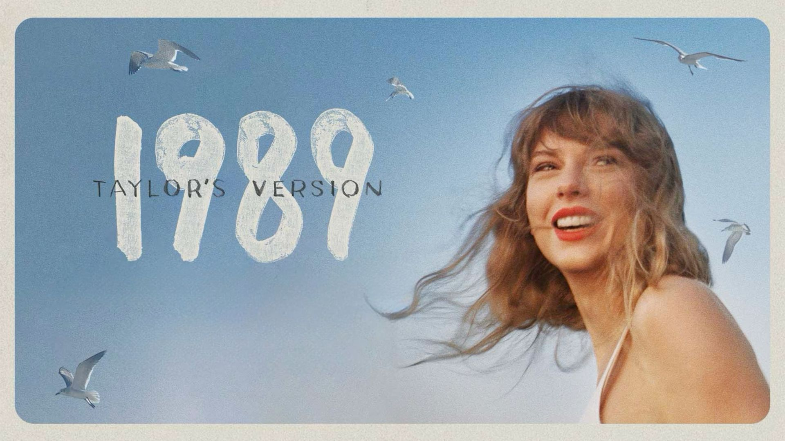

About Taylor
 

:quality(85):extract_cover()/2021/03/14/221/n/1922398/dffbe043a4a160e4_GettyImages-1307122849.jpg)
Taylor Alison Swift (born December 13, 1989) is an American singer-songwriter. Her artistry, songwriting, and entrepreneurship have influenced the music industry and popular culture. A subject of widespread public interest, Swift is an advocate of artists' rights and has had a political impact.
Swift began professional songwriting at age 14. She signed with Big Machine Records in 2005 and achieved prominence as a country pop singer with the albums Taylor Swift (2006) and Fearless (2008). Their singles "Teardrops on My Guitar", "Love Story", and "You Belong with Me" were crossover successes on country and pop radio formats and brought Swift mainstream fame. She experimented with rock and electronic styles on her next albums, Speak Now (2010) and Red (2012), respectively, with the latter featuring her first Billboard Hot 100 number-one single, "We Are Never Ever Getting Back Together". Swift recalibrated her image from country to pop with 1989 (2014), a synth-pop album containing the chart-topping songs "Shake It Off", "Blank Space", and "Bad Blood". Media scrutiny inspired the hip-hop-influenced Reputation (2017) and its number-one single "Look What You Made Me Do".
After signing with Republic Records in 2018, Swift released the eclectic pop album Lover (2019) and the autobiographical documentary Miss Americana (2020). She explored indie folk styles on the 2020 albums Folklore and Evermore, subdued electropop on Midnights (2022), and re-recorded four albums subtitled Taylor's Version[a] after a dispute with Big Machine. These albums spawned the number-one songs "Cruel Summer", "Cardigan", "Willow", "Anti-Hero", "All Too Well", and "Is It Over Now?". Her Eras Tour (2023–2024) and its accompanying concert film became the highest-grossing tour and concert film of all time, respectively. Swift has directed videos and films such as Folklore: The Long Pond Studio Sessions (2020) and All Too Well: The Short Film (2021).
One of the world's best-selling musicians, Swift has sold over 200 million records as of 2019. She is the highest-grossing female touring act, the most-streamed woman on Spotify and Apple Music, and the first billionaire with music as the main source of income. Six of her albums have opened with over one million sales in a week. The 2023 Time Person of the Year, Swift has appeared on lists such as Rolling Stone's 100 Greatest Songwriters of All Time, Billboard's Greatest of All Time Artists, and Forbes' World's 100 Most Powerful Women. Her accolades include 14 Grammy Awards, a Primetime Emmy Award, 40 American Music Awards, 40 Billboard Music Awards, and 23 MTV Video Music Awards; she has won the Grammy Award for Album of the Year, the MTV Video Music Award for Video of the Year, and the IFPI Global Recording Artist of the Year a record four times each.
Discography

- Taylor Swift: (2006)
- Fearless: (2008)
- Speak Now: (2010)
- Red: (2012)
- 1989: (2014)
- Reputation: (2017)
- Lover: (2019)
- Folklore: (2020)
- Evermore: (2020)
- Midnights: (2022)
- The Tortured Poets Department: (2024)